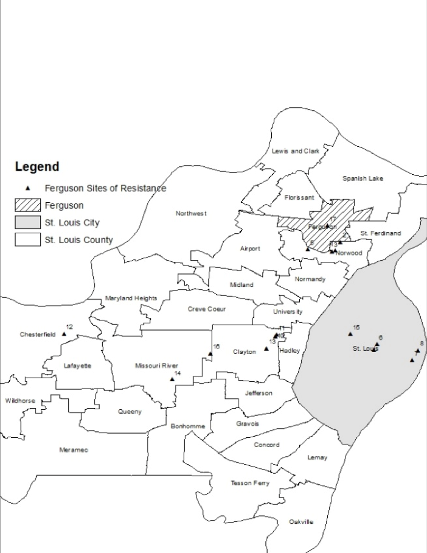
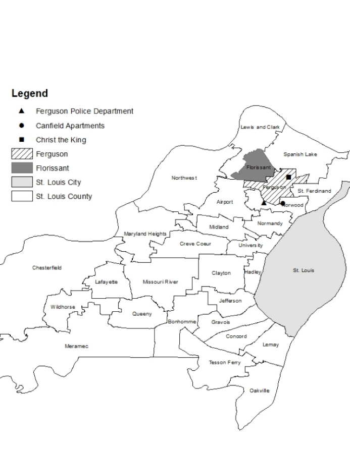

Ferguson Physical Spaces of Resistance

Twitter Spaces of Digital Resistance

As the maps and interviews suggest, the movement’s various demonstrations did not solely occur in the physical space of Ferguson. Nor was it a movement solely defined by social media space.
Content copyright © 2017.